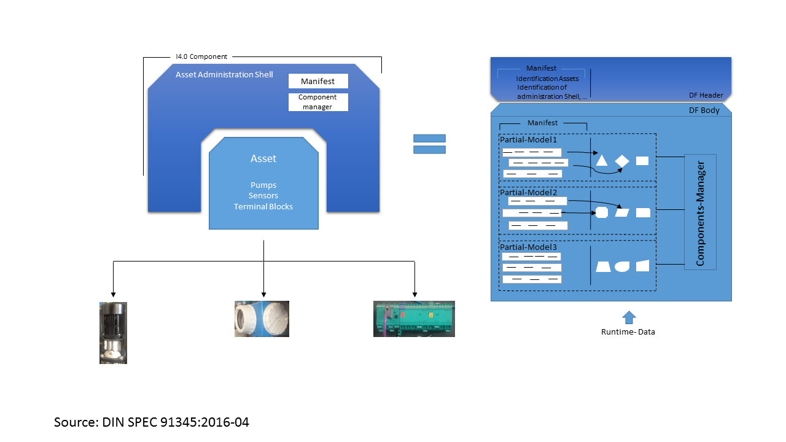

openAAS
Development Repository for open Asset Administration Shell (openAAS) by Chair of Process Control Engineering RWTH Aachen University and ZVEI.
This repository shows the current development state of the administration shell and contains definitions, models, specifications, and prototypes. The specifications are based on previous achievements of ZVEI Workgroups. For prototype development, we use the model based runtime environment ACPLT/RTE as well as open source OPC UA stack open62541
Introduction
The goal of the project is to support the enforcement and distribution of I40-Component models among the industry experts by providing a general discussible, demonstrable and verifiable reference solution. The reference solution should stabilize the described model in DIN SPEC 91345 quickly and put it in availability to be used. It completes the description in DIN SPEC by formal elements. If required, the reference solution can be used by company-specific developments as a generic base directly. In this project, it is also the goal to build a visible crystallization point that can synchronize many works, summarized and goal-oriented in field of asset administration shell and I40-components. Technical content of the project is to provide a generic asset administration shell functionality as an open framework to development I40-components. It requires a systematical formalization of specifications as well as providing an easy and executable open-source-reference solution. On the base of this concept the specification of standards must be demonstrated and verified.
Project Plan
- Formal Description of Architecture
- Implementation of Architecture Framework as Executable (Software-) Components
- Realization of Access to the Communication Platform
- Formal Description and Implementation of the Central Parts of a asset administration Shell
- Description, Implementation and explanation of 4 use case scenarios
- Preparation, organisation and conduction of several plug-Workshops
Important models:
- Asset Administration Shell (structure)
- Message based interaction model
- Property Model
- Lifecycle model
How to contribute
There are different ways to contribute to the openAAS project:
- You can set up a new Issue which allows you to describe your concerns and reference to existing specifications.
- If you would like to make some changes and test around and afterwards offer your changes, you can Fork openAAS repository, make you changes and offer them by creating a Pull Request.